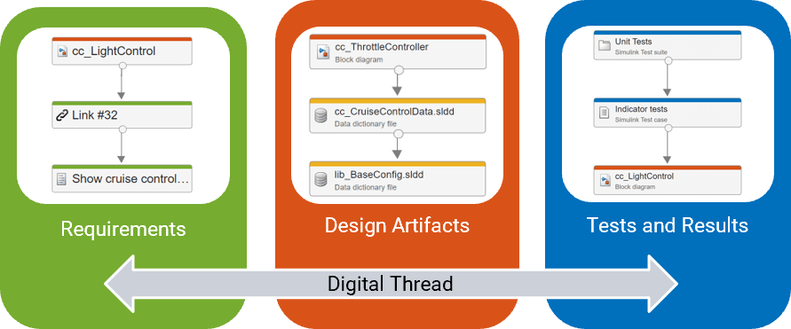

Digital Thread Settings
The digital thread is a set of metadata that stores information about the artifacts and relationships in your project. Several MathWorks® apps and tools use the information in the digital thread to identify traceability relationships, aggregate metric results, and perform incremental builds. For information on how the digital thread analyzes artifacts, see Monitor Artifact Traceability and Detect Outdated Results with Digital Thread (Simulink Check).

You can control the behavior of the digital thread using the Digital Thread Settings dialog box.
In the dialog box, you can specify two types of settings:
User Settings — These settings are stored in the user preference folder.
Project Settings — These settings are stored in the meta information of the project.